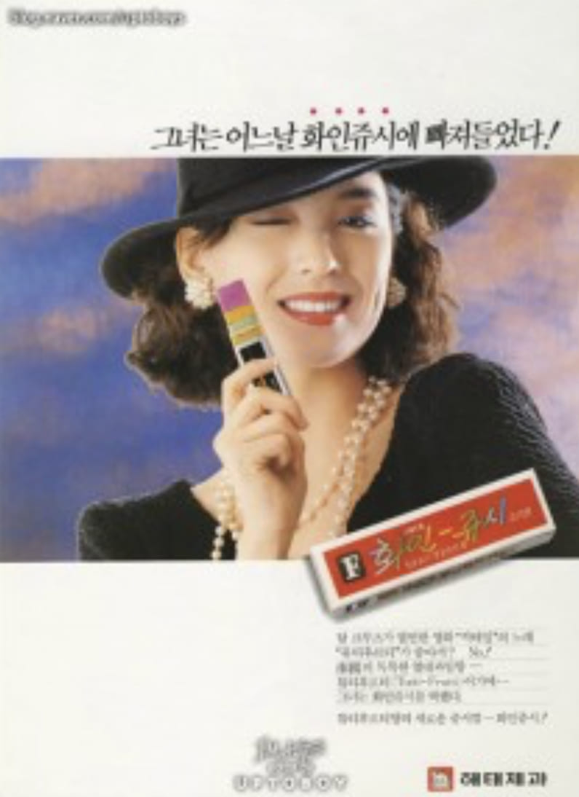

심혜진
그녀는 어느날
화인쥬시에 빠져들었다!

그녀는 어느날
화인쥬시에 빠져들었다!

심혜진은 1980년대 후반 코카콜라 광고를 통해 큰 인기를 얻은 대한민국의 배우이다. 광고 속에서 지적이고 세련된 커리어우먼의 이미지를 선보이며 당시 젊은 여성들의 워너비 스타로 떠올랐다. 이후 영화와 드라마에서 활약하며 대한민국을 대표하는 배우로 자리매김했다.
코카콜라는 세계적으로 사랑받는 탄산음료 브랜드로, 1980년대 한국에서도 젊음과 자유, 현대적인 라이프스타일을 상징하는 음료로 자리 잡았다. 특히 당시 광고는 단순히 음료를 소개하는 것을 넘어 새로운 문화와 이미지를 전달하는 역할을 했다.
심혜진이 출연한 코카콜라 광고는 기존의 여성상과 다른 독립적이고 당당한 커리어우먼의 모습을 보여주었다. 세련된 정장 차림과 자신감 있는 태도는 많은 젊은 여성들의 동경의 대상이 되었으며, 광고 속 심혜진은 '콜라 같은 여자'라는 별칭으로 불릴 만큼 강렬한 인상을 남겼다.
1980년대 후반 광고는 제품의 기능보다 라이프스타일과 이미지를 전달하는 방향으로 변화하기 시작했다. 코카콜라 광고는 젊음과 도시 문화를 상징했으며, 심혜진은 그 중심에서 새로운 여성상을 제시했다. 이러한 광고들은 대중문화와 패션, 소비 트렌드에도 큰 영향을 미쳤다.